Last updated: 2025-02-10
Checks: 7 0
Knit directory: chapter_IDseq_tech/
This reproducible R Markdown analysis was created with workflowr (version 1.7.1). The Checks tab describes the reproducibility checks that were applied when the results were created. The Past versions tab lists the development history.
Great! Since the R Markdown file has been committed to the Git repository, you know the exact version of the code that produced these results.
Great job! The global environment was empty. Objects defined in the global environment can affect the analysis in your R Markdown file in unknown ways. For reproduciblity it’s best to always run the code in an empty environment.
The command set.seed(20240806) was run prior to running
the code in the R Markdown file. Setting a seed ensures that any results
that rely on randomness, e.g. subsampling or permutations, are
reproducible.
Great job! Recording the operating system, R version, and package versions is critical for reproducibility.
Nice! There were no cached chunks for this analysis, so you can be confident that you successfully produced the results during this run.
Great job! Using relative paths to the files within your workflowr project makes it easier to run your code on other machines.
Great! You are using Git for version control. Tracking code development and connecting the code version to the results is critical for reproducibility.
The results in this page were generated with repository version 31f8444. See the Past versions tab to see a history of the changes made to the R Markdown and HTML files.
Note that you need to be careful to ensure that all relevant files for
the analysis have been committed to Git prior to generating the results
(you can use wflow_publish or
wflow_git_commit). workflowr only checks the R Markdown
file, but you know if there are other scripts or data files that it
depends on. Below is the status of the Git repository when the results
were generated:
Ignored files:
Ignored: .Rhistory
Ignored: .Rproj.user/
Ignored: analysis/figure/
Untracked files:
Untracked: code/DS075_combined_analysis.R
Untracked: code/packages_FACS.R
Untracked: code/packages_seq.R
Untracked: data/BB014_LibraryIndex/
Untracked: data/DS027_FirstIDseq/
Untracked: data/DS055_LibraryKlenowAmp/
Untracked: data/DS056_LibraryAmp1/
Untracked: data/DS059_LibraryByproducts/
Untracked: data/DS072_LibraryAmp2/
Untracked: data/DS075_BarcodeCheck/
Untracked: data/DS078_Blocking1/
Untracked: data/DS080_Blocking2/
Untracked: data/DS084_BioInhibition/
Untracked: data/DS091_ImmunostainingBio/
Untracked: data/DSxxx_Conjugations/
Untracked: data/annotated_gels_batch1-10_digital.pptx
Untracked: output/BioAnalyzer_plots/
Untracked: output/DS075_BarcodeCheck/
Untracked: output/DS078_Blocking1/
Untracked: output/DS091_ImmunostainingBio/
Untracked: output/figures/
Untracked: output/network_visual/
Unstaged changes:
Deleted: analysis/about.Rmd
Deleted: analysis/c_flow_vis.Rmd
Note that any generated files, e.g. HTML, png, CSS, etc., are not included in this status report because it is ok for generated content to have uncommitted changes.
These are the previous versions of the repository in which changes were
made to the R Markdown (analysis/z_chapter_suppl.Rmd) and
HTML (docs/z_chapter_suppl.html) files. If you’ve
configured a remote Git repository (see ?wflow_git_remote),
click on the hyperlinks in the table below to view the files as they
were in that past version.
| File | Version | Author | Date | Message |
|---|---|---|---|---|
| Rmd | 31f8444 | mwitmond | 2025-02-10 | Revised ch3 figs |
| html | a92dfa0 | mwitmond | 2024-08-06 | Build site. |
| Rmd | 4e7f883 | mwitmond | 2024-08-06 | Publish initial project files |
row_order = c("A", "B", "C", "D", "E", "F", "G", "H")
col_order = c("1", "2", "3", "4", "5", "6", "7", "8", "9", "10", "11", "12")
panel_labels <- c("a", "b", "c","d", "e", "f", "g", "h", "i", "j", "k", "l", "m")
PANEL_labels <- c("A", "B", "C","D", "E", "F", "G", "H", "I", "J", "K", "L", "M")
textsize <- theme(axis.text.x = element_text(colour = "grey", size = 11), #, face = "bold"
axis.text.y = element_text(colour = "grey", size = 11),
axis.title = element_text(colour = "black", size = 12),
legend.title = element_text(colour = "black", size = 12),
# legend.title = element_blank(),
legend.text = element_text(colour = "grey", size = 11),
strip.text.x = element_text(colour = "black", size = 12)
)
textsize_small <- theme(text = element_text(size = 8, family = "sans", colour = "black"),
plot.title = element_text(size = 9)
)
textsize_medium <- theme(text = element_text(size = 10, family = "sans", colour = "black"),
strip.text.x = element_text(size = 10),
plot.title = element_text(size = 10)
)colors_nord <- c("#2e3440", "#3b4252", "#434c5e", "#4c566a",
"#d8dee9", "#e5e9f0", "#eceff4",
"#8fbcbb", "#88c0d0", "#81a1c1", "#5e81ac",
"#bf616a", "#d08770", "#ebcb8b", "#a3be8c", "#b48ead")
colors_toll_bright <- c("#4477AA", "#66CCEE", "#228833", "#CCBB44", "#EE6677", "#AA3377", "#BBBBBB")
colors_toll_mute <- c("#332288", "#88CCEE", "#44AA99", "#117733", "#999933", "#DDCC77", "#CC6677", "#882255", "#AA4499", "#DDDDDD")
colors_toll_br <- c("#364B9A", "#4A7BB7", "#6EA6CD", "#98CAE1", "#C2E4EF", "#EAECCC", "#FEDA8B", "#FDB366", "#F67A4B", "#DD3D2D", "#A50026")
colors_blue9 <- c("#f7fbff", "#deebf7", "#c6dbef", "#9ecae1", "#6baed6", "#4292c6", "#2171b5", "#08519c", "#08306b")
colors_green9 <- c("#f7fcf5", "#e5f5e0", "#c7e9c0", "#a1d99b", "#74c476", "#41ab5d", "#238b45", "#006d2c", "#00441b")
colors_purple9 <- c("#fcfbfd", "#efedf5", "#dadaeb", "#bcbddc", "#9e9ac8", "#807dba", "#6a51a3", "#54278f", "#3f007d")
colors_red9 <- c("#fff5f0", "#fee0d2", "#fcbba1", "#fc9272", "#fb6a4a", "#ef3b2c", "#cb181d", "#a50f15", "#67000d")
colors_orange9 <- c("#fff5eb", "#fee6ce", "#fdd0a2", "#fdae6b", "#fd8d3c", "#f16913", "#d94801", "#a63603", "#7f2704")
colors_grey9 <- c("#ffffff", "#f0f0f0", "#d9d9d9", "#bdbdbd", "#969696", "#737373", "#525252", "#252525", "#000000")
colors_yb9 <- c("#ffffd9", "#edf8b1", "#c7e9b4", "#7fcdbb", "#41b6c4", "#1d91c0", "#225ea8", "#253494", "#081d58")
colors_pr9 <- c("#f7f4f9", "#e7e1ef", "#d4b9da", "#c994c7", "#df65b0", "#e7298a", "#ce1256", "#980043", "#67001f")
# Variable-specific colors
colors_stim <- c("PBS" = "#737373", "anti-Ig" = "#2cb142", "H2O2" = "#66CCEE",
"Basal" = "#737373", "Activated (anti-Ig)" = "#2cb142", "Activated (H2O2)" = "#66CCEE")
colors_cell <- c("HBL1" = "#df65b0", "DAUDI" = "#41b6c4", "OCI-Ly8" = "#332288")
# colors_cell_alt <- c("HBL1" = "#AA4499", "OCI-Ly8" = "#332288")
colors_block_buf <- c("ID-seq" = "#88CCEE",
"RAID" = "#44AA99",
"QuRIE-seq" = "#117733",
"Ab-seq" = "#AA4499",
"CITE-seq" = "#CC6677",
"NEAT-seq" = "#A50026")
colors_stain_conc <- c("0.5 ug/mL" = "#3f007d",
"0.25 ug/mL" = "#54278f",
"0.125 ug/mL" = "#807dba",
"0.063 ug/mL" = "#9e9ac8",
"0.031 ug/mL" = "#bcbddc",
"0 ug/mL" = "#d9d9d9")
colors_stain_cell <- c("0M (no cell)" = "#d9d9d9", "0.25M" = "#9e9ac8", "0.5M" = "#54278f")
colors_stain_volume <- c("20 uL" = "#fdbe85", "30 uL" = "#fd8d3c", "40 uL" = "#e6550d")Figure S1: Detailed B-cell signaling network.
Input: - BioRender schematic figures
# Placeholder
figS1_panelA <- ggplot() +
geom_blank() +
scale_x_continuous(limits = c(0, 10)) +
scale_y_continuous(limits = c(0, 10)) +
# labs(title = "BCR signaling network") +
theme_bw() +
theme(axis.text = element_text(color = "white"),
axis.ticks = element_blank(),
panel.grid = element_blank()) +
textsize_small
# figS1_panelA
# PNG
png_figS1_panelA <- image_read("output/figures/non_R_figs/ch3_Bcell_network_full_202411.png") %>%
image_ggplot(interpolate = TRUE)
png_figS1_panelA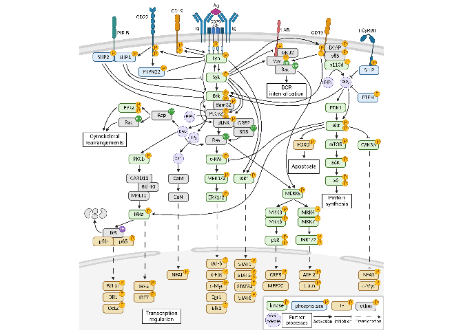
# Combine all panels of the figure
png_figS1_panelA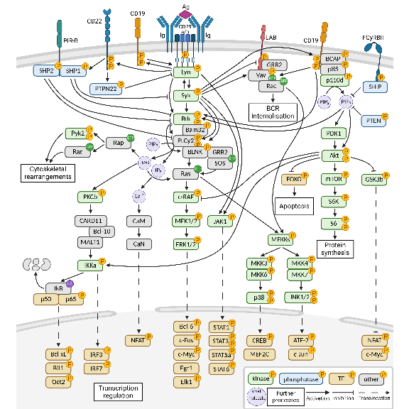
# Save figure as pdf, jpg
ggsave(
figS1_panelA,
filename = "output/figures/suppl_figS1.pdf",
width = 6,
height = 6,
units = "in",
dpi = 300
)
ggsave(
figS1_panelA,
filename = "output/figures/suppl_figS1_place.jpg",
width = 6,
height = 6,
units = "in",
dpi = 300
)Figure S1: Detailed B-cell signaling network.
# Remove unnecessary files to clear up memory
rm(list = ls(pattern = "figS1"))
# rm(list = ls(pattern = "_fig1"))
rm(list = ls(pattern = "png_"))
gc() used (Mb) gc trigger (Mb) max used (Mb)
Ncells 10594146 565.8 17081781 912.3 12781065 682.6
Vcells 18367274 140.2 71773003 547.6 89385421 682.0Figure S2: Antibody-DNA conjugates after 2 years of storage at -20C.
Input: - SDS-PAGE gel images
# Placeholder
figS2_panelA <- ggplot() +
geom_blank() +
scale_x_continuous(limits = c(0, 10)) +
scale_y_continuous(limits = c(0, 10)) +
# labs(title = "BCR signaling network") +
theme_bw() +
theme(axis.text = element_text(color = "white"),
axis.ticks = element_blank(),
panel.grid = element_blank()) +
textsize_small
# figS2_panelA
# PNG
png_figS2_panelA <- image_read("output/figures/non_R_figs/conjugation_immediately.png") %>%
image_ggplot(interpolate = TRUE)
png_figS2_panelA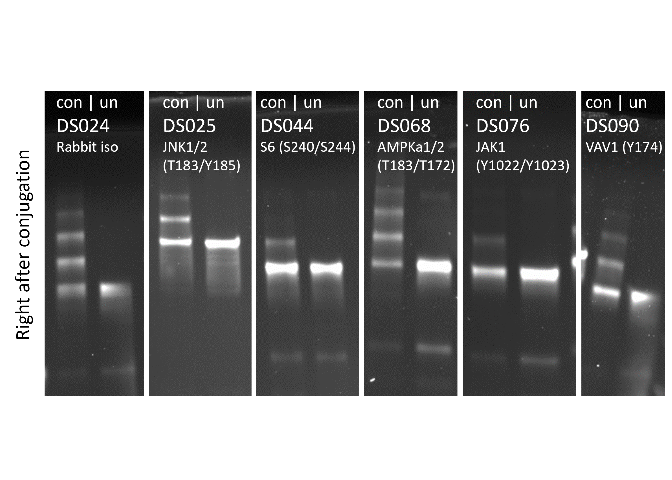
# Placeholder
figS2_panelB <- ggplot() +
geom_blank() +
scale_x_continuous(limits = c(0, 10)) +
scale_y_continuous(limits = c(0, 10)) +
# labs(title = "BCR signaling network") +
theme_bw() +
theme(axis.text = element_text(color = "white"),
axis.ticks = element_blank(),
panel.grid = element_blank()) +
textsize_small
# figS2_panelB
# PNG
png_figS2_panelB <- image_read("output/figures/non_R_figs/conjugation_after2years.png") %>%
image_ggplot()
png_figS2_panelB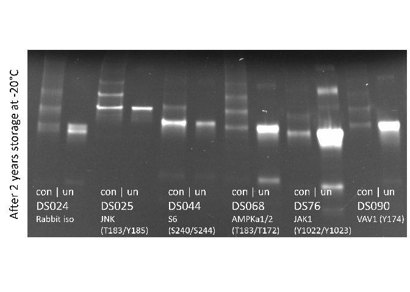
# Combine all panels of the figure
figS2 <- plot_grid(png_figS2_panelA, png_figS2_panelB, labels = PANEL_labels[c(1, 2)], ncol = 1, rel_heights = c(1, 1), label_size = 10)
figS2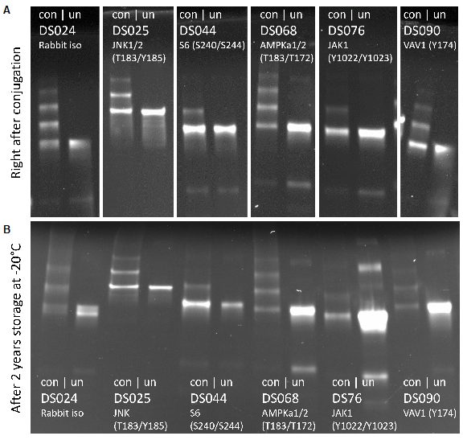
# Save figure as pdf, jpg, and png
ggsave(
figS2,
filename = "output/figures/suppl_figS2.pdf",
width = 6,
height = 5.7,
units = "in",
dpi = 300
)
ggsave(
figS2,
filename = "output/figures/suppl_figS2.jpg",
width = 6,
height = 5.7,
units = "in",
dpi = 300
)Figure S2: Antibody-DNA conjugates after 2 years of storage at -20C.
# Remove unnecessary files to clear up memory
rm(list = ls(pattern = "figS2"))
# rm(list = ls(pattern = "_fig1"))
rm(list = ls(pattern = "png_"))
gc() used (Mb) gc trigger (Mb) max used (Mb)
Ncells 10632394 567.9 17081781 912.3 14901174 795.9
Vcells 23709166 180.9 71773003 547.6 89385421 682.0Figure S3: Examples of clean and contaminated Ab barcodes.
Input:
# ID-seq data DS075 (counts per barcode per well)
figS3_data_id <- read_csv("output/DS075_BarcodeCheck/IDseq_ann/IDseq_data_sample.csv")figS3_BC_color <- c("correct" = "#2cb142", "false" = "black") #"#2cb142" "#74c476"# Select data
set.seed(8448)
figS3A_data_id <- figS3_data_id %>%
dplyr::filter(counts_percent > 0.1) %>%
group_by(expected_BC_long) %>%
mutate(total_prot = n(),
expected_BC_label = paste("Expected: BC", expected_BC),
expected_BC_color = case_when(measured_BC_long == expected_BC_long ~ "correct",
.default = "false")) %>%
ungroup() %>%
dplyr::filter(total_prot == 1 & expected_BC < 100) %>%
# sample_n(6)
subset(expected_BC %in% c(52, 59, 72, 75, 90, 97))
# Figure
figS3_panelA <- ggplot(figS3A_data_id) +
geom_point(aes(factor(measured_BC), counts_percent, color = expected_BC_color)) +
facet_wrap(vars(factor(expected_BC_label)), scales = "free_x", nrow = 3) +
coord_cartesian(ylim = c(0, 100)) +
scale_color_manual(values = figS3_BC_color) +
labs(x = "Measured Ab barcode", y = "Percentage of total counts") +
theme_bw() +
theme(panel.grid.minor = element_blank(), panel.grid.major.x = element_blank(), legend.position = "none") +
textsize_small
figS3_panelA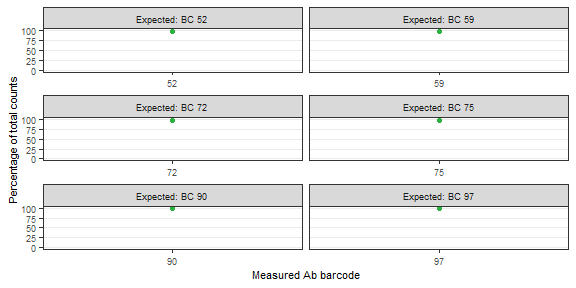
# Select data
set.seed(8448)
figS3B_data_id <- figS3_data_id %>%
dplyr::filter(counts_percent > 2.5) %>%
group_by(expected_BC_long) %>%
mutate(total_prot = n(),
expected_BC_label = paste("Expected: BC", expected_BC),
expected_BC_color = case_when(measured_BC_long == expected_BC_long ~ "correct",
.default = "false")) %>%
ungroup() %>%
dplyr::filter(total_prot > 1 & expected_BC < 100) %>%
# sample_n(6)
subset(expected_BC %in% c(3, 7, 14, 22, 53, 56, 74, 83, 96))
# Figure
figS3_panelB <- ggplot(figS3B_data_id) +
geom_point(aes(factor(measured_BC), counts_percent, color = expected_BC_color)) +
facet_wrap(vars(factor(expected_BC_label)), scales = "free_x", nrow = 3) +
# facet_wrap(~expected_BC_long, scales = "free_x") +
coord_cartesian(ylim = c(0, 100)) +
scale_color_manual(values = figS3_BC_color) +
labs(x = "Measured Ab barcode", y = "Percentage of total counts") +
theme_bw() +
# theme(axis.text.x = element_text(angle = 45, hjust = 1, vjust = 1), panel.grid.minor = element_blank(), panel.grid.major.x = element_blank(), legend.position = "none") +
theme(panel.grid.minor = element_blank(), panel.grid.major.x = element_blank(), legend.position = "none") +
textsize_small
figS3_panelB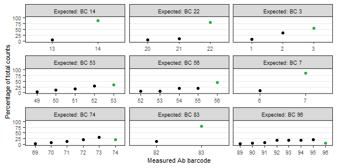
# Combine all panels of the figure
figS3 <- plot_grid(figS3_panelA, figS3_panelB, labels = PANEL_labels[c(1, 2)], nrow = 1, rel_widths = c(1, 1.5), label_size = 10)
figS3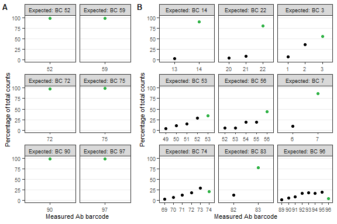
# Save figure as pdf, jpg, and png
ggsave(
figS3,
filename = "output/figures/suppl_figS3.pdf",
width = 6,
height = 4,
units = "in",
dpi = 300
)
ggsave(
figS3,
filename = "output/figures/suppl_figS3.jpg",
width = 6,
height = 4,
units = "in",
dpi = 300
)Figure S3: Examples of clean and contaminated Ab barcodes.
# Remove unnecessary files to clear up memory
rm(list = ls(pattern = "figS3"))
# rm(list = ls(pattern = "_fig1"))
rm(list = ls(pattern = "png_"))
gc() used (Mb) gc trigger (Mb) max used (Mb)
Ncells 10743496 573.8 17081781 912.3 17081781 912.3
Vcells 18650657 142.3 57418403 438.1 89385421 682.0Figure S4: Immunostaining conditions in DAUDI treated with anti-Ig.
Input:
# ID-seq data DS091 (counts per well/sample and mean per condition)
figS4_data_id <- read_csv("output/DS091_ImmunostainingBio/IDseq_ann/IDseq_data_sample.csv")
# figS4_mean_id <- read_csv("output/DS091_ImmunostainingBio/IDseq_ann/IDseq_data_condition.csv")figS4_stain_conc <- c("0.5 ug/mL", "0.25 ug/mL", "0.125 ug/mL", "0.063 ug/mL", "0.031 ug/mL", "0 ug/mL")Differential expression analysis of the effect of staining conc on H2O2 vs PBS
DESeq2 analysis parameters:
HBL1 cells: 2 stimuli, 6 staining conc, 3 staining cell nr, 3 staining volumes
Compensated counts (>= 1)
Model design: staining_conc_text (ref: 0.5 ug/mL) + stimulus ( ref: PBS) + staining_conc_text:stimulus
# Select data
figS4A_data <- figS4_data_id %>%
dplyr::filter(cell_line == "DAUDI" & staining_cells == "0.25M" & staining_volume != "20 uL" & counts >= 1)
# Differential expression analysis
# Prepare data to load into DESeq dataset
# cts: dataframe with proteins as row names, wells as column names, and count data as cell values
# coldata: dataframe with wells as row names and all metadata as columns
cts <- figS4A_data %>%
dplyr::select(target_nospace, plate_well, counts) %>%
dplyr::filter(!is.na(counts)) %>%
spread(plate_well, counts) %>%
replace(is.na(.), 0) %>%
column_to_rownames("target_nospace")
cts <- as.matrix(as.data.frame(cts))
coldata <- data.frame(plate_well = colnames(cts)) %>%
left_join(figS4A_data[, c(1:16)]) %>%
distinct() %>%
mutate(staining_conc_text = factor(staining_conc_text, levels = figS4_stain_conc))
rownames(coldata) <- coldata$plate_well
# Create DESeq object
# First define how the model is designed. Place most important parameter last
modeldesign <- ~ staining_conc_text + stimulus + staining_conc_text:stimulus
# Then create the DESeq dataset
dds <- DESeqDataSetFromMatrix(countData = cts,
colData = coldata,
design = modeldesign)
# Define the reference samples for design parameter
# dds$staining_conc_text <- relevel(dds$staining_conc_text, ref = "0.5 ug/mL")
dds$stimulus <- relevel(dds$stimulus, ref = "PBS")
# Run DESeq2:
# This function performs a default analysis through the steps:
# Estimation of size factors: estimateSizeFactors
# Estimation of dispersion: estimateDispersions
# Negative Binomial GLM fitting and Wald statistics: nbinomWaldTest
dds <- DESeq(dds, test = "Wald", fitType = "local")
DESeq_comparisons <- resultsNames(dds) # lists the coefficients
# DESeq_comparisons
# Results
results_aIg <- results(dds, name = "stimulus_anti.Ig_vs_PBS", alpha = 0.05)
# summary(results_H2O2, padj = 0.05)
results_conc_0.25 <- results(dds, name = "staining_conc_text_0.25.ug.mL_vs_0.5.ug.mL", alpha = 0.05)
results_conc_0.125 <- results(dds, name = "staining_conc_text_0.125.ug.mL_vs_0.5.ug.mL", alpha = 0.05)
results_conc_0.063 <- results(dds, name = "staining_conc_text_0.063.ug.mL_vs_0.5.ug.mL", alpha = 0.05)
results_conc_0.031 <- results(dds, name = "staining_conc_text_0.031.ug.mL_vs_0.5.ug.mL", alpha = 0.05)
results_conc_0 <- results(dds, name = "staining_conc_text_0.ug.mL_vs_0.5.ug.mL", alpha = 0.05)
results_stim_0.25 <- results(dds, name = "staining_conc_text0.25.ug.mL.stimulusanti.Ig", alpha = 0.05)
results_stim_0.125 <- results(dds, name = "staining_conc_text0.125.ug.mL.stimulusanti.Ig", alpha = 0.05)
results_stim_0.063 <- results(dds, name = "staining_conc_text0.063.ug.mL.stimulusanti.Ig", alpha = 0.05)
results_stim_0.031 <- results(dds, name = "staining_conc_text0.031.ug.mL.stimulusanti.Ig", alpha = 0.05)
results_stim_0 <- results(dds, name = "staining_conc_text0.ug.mL.stimulusanti.Ig", alpha = 0.05)
list_results <- list(results_aIg,
results_conc_0.25, results_conc_0.125, results_conc_0.063, results_conc_0.031, results_conc_0,
results_stim_0.25, results_stim_0.125, results_stim_0.063, results_stim_0.031, results_stim_0)
# Data transformation
# Regularized log transform
rld_DAUDI <- rlog(dds, blind = FALSE)
# Data wrangling
# Function to prepare DESeq2 results for volcano plots
# Standard log2FC filter = log2(1.5); standard padj filter = 0.05
prep_forvulcano <- function(dataset = dataset, padj_filter = 0.05, foldchange_filter = log2(1.5)){
dataset$proteins <- rownames(dataset)
dataset$target_nospace <- rownames(dataset)
# Add a column for differential expression
dataset$diff_express <- "NO"
dataset$diff_express[dataset$log2FoldChange > foldchange_filter & dataset$padj < padj_filter] <- "UP"
dataset$diff_express[dataset$log2FoldChange < -foldchange_filter & dataset$padj < padj_filter] <- "DOWN"
# Add a column for labeling
dataset$delabel <- NA
dataset$delabel[dataset$diff_express != "NO"] <- dataset$proteins[dataset$diff_express != "NO"]
# Add Ab metadata
# dataset <- left_join(as.data.frame(dataset), meta_Abs)
return(dataset)
}
# Apply function to each dataset
# Applied thresholds:
# padj < 0.05
# log2FC > log2(1.2)
names_volc <- c("volc_aIg",
"volc_conc_0.25", "volc_conc_0.125", "volc_conc_0.063", "volc_conc_0.031", "volc_conc_0",
"volc_stim_0.25", "volc_stim_0.125", "volc_stim_0.063", "volc_stim_0.031", "volc_stim_0")
for(dataset in c(1:length(list_results))){
assign(names_volc[dataset], prep_forvulcano(dataset = list_results[[dataset]], foldchange_filter = log2(1.1)))
}
# Function to filter the data
# Standard log2FC filter = log2(1.5); standard padj filter = 0.05
filter_heatmap <- function(dataset = dataset, padj_filter = 0.05, foldchange_filter = log2(1.5), select_top = TRUE, select_n = 10) {
data <- as.data.frame(dataset) %>%
dplyr::filter(padj <= padj_filter & abs(log2FoldChange) >= foldchange_filter) %>%
arrange(-log2FoldChange)
rownames(data) <- data$target_nospace
# Select top 10 proteins with most increased and decreased expression
if (select_top == TRUE) {
data_top <- data %>%
slice_max(order_by = abs(log2FoldChange), n = select_n)
return(data_top)
} else {
return(data)
}
}
# Apply function to each dataset
list_results_volc <- list(volc_aIg,
volc_conc_0.25, volc_conc_0.125, volc_conc_0.063, volc_conc_0.031, volc_conc_0,
volc_stim_0.25, volc_stim_0.125, volc_stim_0.063, volc_stim_0.031, volc_stim_0)
names_heat <- c("heat_aIg",
"heat_conc_0.25", "heat_conc_0.125", "heat_conc_0.063", "heat_conc_0.031", "heat_conc_0",
"heat_stim_0.25", "heat_stim_0.125", "heat_stim_0.063", "heat_stim_0.031", "heat_stim_0")
for(dataset in c(1:length(list_results_volc))){
assign(names_heat[[dataset]], filter_heatmap(dataset = list_results_volc[[dataset]], select_top = FALSE, foldchange_filter = log2(1.1)))
dataset
}# Data
# Combine heatmap datasets (without DESeq2 analysis values)
heat_combi_DAUDI <- list(heat_aIg#,
# heat_conc_0.25, heat_conc_0.125, heat_conc_0.063, heat_conc_0.031, heat_conc_0
# heat_stim_0.25, heat_stim_0.125, heat_stim_0.063, heat_stim_0.031, heat_stim_0
) %>%
purrr::reduce(full_join) %>%
dplyr::select(-c(baseMean, log2FoldChange, lfcSE, stat, pvalue, padj, diff_express)) %>%
left_join(figS4_data_id[, 17:24]) %>%
dplyr::filter(modification == "phospho") %>%
distinct()
# Subset the full dataframe to get metadata for heatmap plotting
figS4A_info_DAUDI <- figS4A_data %>%
dplyr::select(plate_well, staining_volume, staining_conc_text, stim_clean) %>%
distinct() %>%
# dplyr::filter(cell_line == "DAUDI" &inhibitor == "iBTK" & inhib_conc %in% fig2_conc_all & !(stim_clean == "Basal" & inhib_conc %in% fig2_conc_all[2:5])) %>%
mutate(stim_clean = factor(stim_clean, levels = c("Basal", "Activated (H2O2)")),
staining_conc_text = factor(staining_conc_text, levels = figS4_stain_conc),
staining_conc_label = factor(str_replace(staining_conc_text, " ", "\n"), levels = c("0.5\nug/mL", "0.25\nug/mL", "0.125\nug/mL", "0.063\nug/mL", "0.031\nug/mL", "0\nug/mL"))) %>%
as.data.frame()
rownames(figS4A_info_DAUDI) <- figS4A_info_DAUDI$plate_well
figS4A_info_DAUDI <- dplyr::select(figS4A_info_DAUDI, -c(plate_well))
# Get the rld transformed data for the heatmap and scale per row
figS4A_data_heat_DAUDI <- t(scale(t(assay(rld_DAUDI)[c(heat_combi_DAUDI$target_nospace), rownames(figS4A_info_DAUDI)])))
# sort_hclust <- function(...) as.hclust(dendsort(as.dendrogram(...)))
# data_cluster_rows <- sort_hclust(hclust(dist(data_cell)))
# plot(data_cluster_rows, main = "Unsorted Dendrogram", xlab = "", sub = "")
# Figure
figS4A_ann_colors <- list(#Cells = colors_stain_cell,
"Staining volume" = colors_stain_volume,
"Panel conc." = colors_stain_conc,
Stimulus = colors_stim)
figS4A_heat_legend <- list(title = "Scaled\nexpression", title_gp = gpar(fontsize = 7), labels_gp = gpar(fontsize = 7),
grid_width = unit(2, "mm"), grid_height = unit(20, "mm"))
figS4A_col_ann <- HeatmapAnnotation(#Cells = figS4A_info_DAUDI$staining_cells,
"Staining volume" = figS4A_info_DAUDI$staining_volume,
"Panel conc." = figS4A_info_DAUDI$staining_conc_text,
Stimulus = figS4A_info_DAUDI$stim_clean,
simple_anno_size = unit(2.5, "mm"),
annotation_name_gp = gpar(fontsize = 7),
col = figS4A_ann_colors,
annotation_legend_param = list(#Cells = list(title = "Cells",
# title_gp = gpar(fontsize = 6),
# labels_gp = gpar(fontsize = 6),
# grid_width = unit(2, "mm"),
# grid_height = unit(1, "mm")),
"Staining volume" = list(title = "Staining\nvolume",
title_gp = gpar(fontsize = 7),
labels_gp = gpar(fontsize = 7),
grid_width = unit(2.5, "mm"),
grid_height = unit(1, "mm")),
"Panel conc." = list(title = "Panel\nconcentration",
title_gp = gpar(fontsize = 7),
labels_gp = gpar(fontsize = 7),
grid_width = unit(2.5, "mm"),
grid_height = unit(1, "mm")),
Stimulus = list(title = "Stimulus",
title_gp = gpar(fontsize = 7),
labels_gp = gpar(fontsize = 7),
grid_width = unit(2.5, "mm"),
grid_height = unit(1, "mm"))),
show_legend = c(TRUE, TRUE, TRUE))
figS4_panelA <- ggplotify::as.ggplot(ComplexHeatmap::pheatmap(
figS4A_data_heat_DAUDI,
scale = "none",
cluster_rows = TRUE,
# treeheight_row = 20,
show_rownames = TRUE,
show_colnames = FALSE,
cluster_cols = FALSE,
top_annotation = figS4A_col_ann,
annotation_colors = figS4A_ann_colors,
colorRampPalette(c("navy", "white", "firebrick3"))(50),
column_split = figS4A_info_DAUDI$staining_conc_label,
# row_split = heat_combi_DAUDI$modification,
row_gap = unit(1, "mm"),
# cellwidth = 10,
# cellheight = 10,
fontsize = 6,
row_title_gp = gpar(fontsize = 6),
column_title_gp = gpar(fontsize = 6),
annotation_names_col = gpar(fontsize = 7),
border_color = NA,
heatmap_legend_param = figS4A_heat_legend,
# annotation_legend = FALSE,
)) +
# ggtitle(" Signaling activation in DAUDI under different staining conditions") +
textsize_medium
figS4_panelA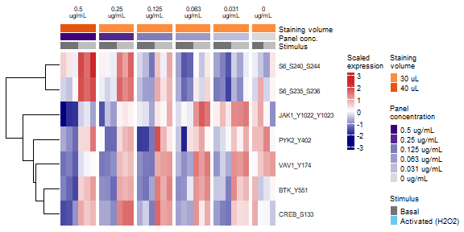
# Combine all panels of the figure
figS4_panelA# Save figure as pdf, jpg, and png
ggsave(
figS4_panelA,
filename = "output/figures/suppl_figS4.pdf",
width = 6,
height = 3,
units = "in",
dpi = 300
)
ggsave(
figS4_panelA,
filename = "output/figures/suppl_figS4.jpg",
width = 6,
height = 3,
units = "in",
dpi = 300
)Figure S4: Immunostaining conditions in DAUDI treated with anti-Ig.
# Remove unnecessary files to clear up memory
rm(list = ls(pattern = "figS4"))
rm(list = ls(pattern = "png"))
rm(list = ls(pattern = "results_"))
rm(list = ls(pattern = "volc_"))
rm(list = ls(pattern = "list_"))
rm(list = ls(pattern = "names_"))
rm(list = ls(pattern = "titles_"))
rm(list = ls(pattern = "data_"))
rm(list = ls(pattern = "heat_"))
rm(list = ls(pattern = "rld"))
rm(list = ls(pattern = "pca"))
gc() used (Mb) gc trigger (Mb) max used (Mb)
Ncells 11036214 589.4 17081781 912.3 17081781 912.3
Vcells 19326300 147.5 57418403 438.1 89385421 682.0Figure S5: Comparison of phospho flow cytometry and ID-seq measurements.
Input:
DS091 phosphoflow data
DS091 ID-seq data
# Phosphoflow data DS091
figS5_data_pf <- read_csv("output/DS091_ImmunostainingBio/flow_ann/flow_data_DS091.csv")
# ID-seq data DS091 (counts per well/sample and mean per condition)
figS5_data_id <- read_csv("output/DS091_ImmunostainingBio/IDseq_ann/bio_IDseq_data_sample.csv")
figS5_mean_id <- read_csv("output/DS091_ImmunostainingBio/IDseq_ann/bio_IDseq_data_condition.csv")figS5_stim <- c("PBS", "anti-Ig", "H2O2")
figS5_stim_clean <- c("Basal", "Activated (anti-Ig)", "Activated (H2O2)")
figS5_cell <- c("DAUDI", "HBL1")
figS5_cell_stim <- c("DAUDI - Basal", "DAUDI - Activated (anti-Ig)", "HBL1 - Basal", "HBL1 - Activated (H2O2)")
figS5_cell_stim_label <- c("DAUDI\nBasal", "DAUDI\nActivated\n(anti-Ig)", "HBL1\nBasal", "HBL1\nActivated\n(H2O2)")
figS5_proteins_pf <- c("pCD79a (Y182)", "pSYK (Y525/Y526)") #"pPLCy2 (Y759)"
figS5_proteins_id <- c("CD79a_Y182", "SYK_Y525_Y526") #PLCy2_Y759"
figS5_proteins_id_label <- c("CD79a_Y182" = "pCD79a (Y182)", "SYK_Y525_Y526" = "pSYK (Y525/Y526)") #PLCy2_Y759"# Select data
figS5A_data <- figS5_data_pf %>%
# subset(protein == "pCD79a (Y182)")
subset(protein %in% figS5_proteins_pf)
# Figure
figS5_panelA <- ggplot(figS5A_data, aes(x = fluorescence)) +
geom_density_ridges(
aes(y = factor(description, levels = rev(figS5_cell_stim), labels = rev(figS5_cell_stim_label)), fill = factor(stim_clean, levels = figS5_stim_clean)),
scale = 1,
alpha = 0.5
) +
facet_wrap(vars(factor(protein, levels = figS5_proteins_pf)), nrow = 1) +
scale_x_logicle() + # logicle scale instead of log10 scale
scale_fill_manual(values = colors_stim, name = "Treatment") +
labs(x = "Fluorescent intensity", y = "") +
theme_bw() +
theme(panel.grid.minor = element_blank(), legend.key.size = unit(0.5, "cm"), legend.spacing.y = unit(0.2, "cm"), legend.box.spacing = unit(0.1, "cm"), legend.position = "none", legend.justification = "right") +
textsize_small
figS5_panelA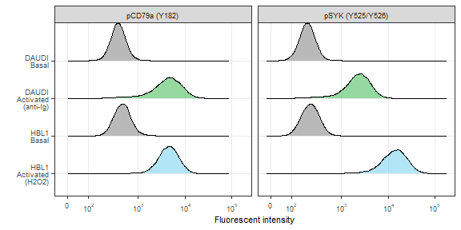
# Select data
figS5B_data <- figS5_data_id %>%
# subset(target_nospace == "CD79a_Y182")
subset(target_nospace %in% figS5_proteins_id)
figS5B_mean <- figS5_mean_id %>%
# subset(target_nospace == "CD79a_Y182")
subset(target_nospace %in% figS5_proteins_id)
# Figure
figS5_panelB <- ggplot() +
geom_jitter(data = figS5B_data,
aes(x = factor(description_sample, levels = figS5_cell_stim, labels = figS5_cell_stim_label),
y = counts_norm,
color = factor(stim_clean, levels = figS5_stim_clean)),
alpha = 1, size = 1, width = 0.1) +
geom_errorbar(data = figS5B_mean,
aes(x = factor(description_sample, levels = figS5_cell_stim, labels = figS5_cell_stim_label),
ymin = counts_norm, ymax = counts_norm,
group = factor(stim_clean, levels = figS5_stim_clean),
color = factor(stim_clean, levels = figS5_stim_clean)),
width = 0.35, size = 0.75) +
facet_wrap(vars(factor(target_nospace, levels = figS5_proteins_id, labels = figS5_proteins_id_label)), nrow = 1, scales = "free_y") +
scale_color_manual(values = colors_stim, name = "Treatment") +
labs(x = element_blank(), y = "Normalised counts") +
theme_bw() +
theme(panel.grid.minor.y = element_blank(), panel.grid.major.x = element_blank(), legend.key.size = unit(0.5, "cm"), legend.spacing.y = unit(0.2, "cm"), legend.box.spacing = unit(0.1, "cm"), legend.position = "none", legend.justification = "right") +
textsize_small
figS5_panelB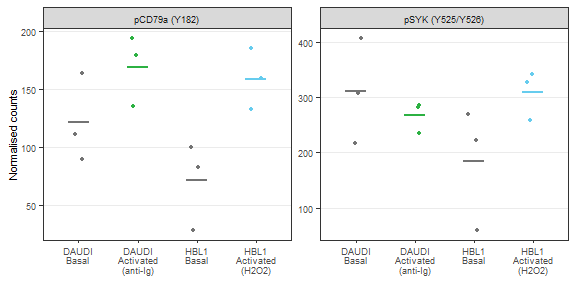
# Combine all panels of the figure
figS5 <- plot_grid(figS5_panelA, figS5_panelB, labels = PANEL_labels[c(1:2)], ncol = 1, rel_heights = c(1.2, 1), label_size = 10, align = "v")
figS5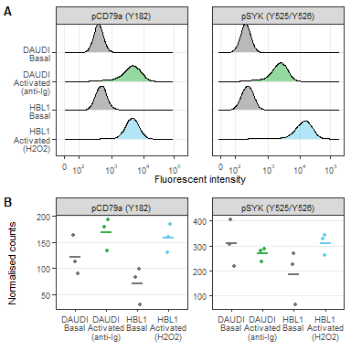
# Save figure as pdf, jpg, and png
ggsave(
figS5,
filename = "output/figures/suppl_figS5.pdf",
width = 4,
height = 4,
units = "in",
dpi = 300
)
ggsave(
figS5,
filename = "output/figures/suppl_figS5.jpg",
width = 4,
height = 4,
units = "in",
dpi = 300
)Figure S5: Comparison of phospho flow cytometry and ID-seq measurements.
# Remove unnecessary files to clear up memory
rm(list = ls(pattern = "figS5"))
# rm(list = ls(pattern = "_fig1"))
rm(list = ls(pattern = "png_"))
gc() used (Mb) gc trigger (Mb) max used (Mb)
Ncells 11073864 591.5 17081781 912.3 17081781 912.3
Vcells 22488438 171.6 57418403 438.1 89385421 682.0Figure S6: Volcano visualisation of activated signaling compared to basal signaling.
Input:
# ID-seq data DS091 (counts per well/sample)
figS6_data_id <- read_csv("output/DS091_ImmunostainingBio/IDseq_ann/bio_IDseq_data_sample.csv")figS6_cells <- c("DAUDI", "HBL1")
figS6_stim <- c("Basal", "Activated (anti-Ig)", "Activated (H2O2)")
figS6_stim_label <- c("Basal", "Activated\n(anti-Ig)", "Activated\n(H2O2)")
figS6_cell_stim <- c("DAUDI - Basal", "DAUDI - Activated (anti-Ig)", "HBL1 - Basal", "HBL1 - Activated (H2O2)")
figS6_cell_stim_label <- c("DAUDI basal", "DAUDI activated\n(anti-Ig)", "HBL1 basal", "HBL1 activated\n(H2O2)")
figS6_meta_cols <- c("plate_well", "plate", "well", "experiment", "cell_line", "stimulus", "stim_clean", "replicate", "description_sample", "description_sample_rep", "description_staining")Differential expression analysis of activated (anti-Ig) vs basal signaling in DAUDI
DESeq2 analysis parameters:
DAUDI cells: 2 stimuli
Compensated counts (>= 1)
Model design: stim_clean (ref: Basal)
# Select data
figS6A_data <- figS6_data_id %>%
dplyr::filter(cell_line == "DAUDI" & counts >= 1)
# Differential expression analysis
# Prepare data to load into DESeq dataset
# cts: dataframe with proteins as row names, wells as column names, and count data as cell values
# coldata: dataframe with wells as row names and all metadata as columns
cts <- figS6A_data %>%
dplyr::select(target_nospace, plate_well, counts) %>%
dplyr::filter(!is.na(counts)) %>%
spread(plate_well, counts) %>%
replace(is.na(.), 0) %>%
column_to_rownames("target_nospace")
cts <- as.matrix(as.data.frame(cts))
coldata <- data.frame(plate_well = colnames(cts)) %>%
left_join(figS6A_data[, c(1:16)]) %>%
distinct()
rownames(coldata) <- coldata$plate_well
# Create DESeq object
# First define how the model is designed. Place most important parameter last
modeldesign <- ~ stim_clean
# Then create the DESeq dataset
dds <- DESeqDataSetFromMatrix(countData = cts,
colData = coldata,
design = modeldesign)
# Define the reference samples for design parameter
# dds$staining_conc_text <- relevel(dds$staining_conc_text, ref = "0.5 ug/mL")
dds$stim_clean <- relevel(dds$stim_clean, ref = "Basal")
# Run DESeq2:
# This function performs a default analysis through the steps:
# Estimation of size factors: estimateSizeFactors
# Estimation of dispersion: estimateDispersions
# Negative Binomial GLM fitting and Wald statistics: nbinomWaldTest
dds <- DESeq(dds, test = "Wald", fitType = "local")
DESeq_comparisons <- resultsNames(dds) # lists the coefficients
# DESeq_comparisons
# Results
results_DAUDI <- results(dds, name = "stim_clean_Activated..anti.Ig._vs_Basal", alpha = 0.05)
# summary(results_DAUDI, padj = 0.05)
list_results <- list(results_DAUDI)
# Data transformation
# Regularized log transform
rld_DAUDI <- rlog(dds, blind = FALSE)
# Data wrangling
# Function to prepare DESeq2 results for volcano plots
# Standard log2FC filter = log2(1.5); standard padj filter = 0.05
prep_forvulcano <- function(dataset = dataset, padj_filter = 0.05, foldchange_filter = log2(1.5)){
dataset$proteins <- rownames(dataset)
dataset$target_nospace <- rownames(dataset)
# Add a column for differential expression
dataset$diff_express <- "NO"
dataset$diff_express[dataset$log2FoldChange > foldchange_filter & dataset$padj < padj_filter] <- "UP"
dataset$diff_express[dataset$log2FoldChange < -foldchange_filter & dataset$padj < padj_filter] <- "DOWN"
# Add a column for labeling
dataset$delabel <- NA
dataset$delabel[dataset$diff_express != "NO"] <- dataset$proteins[dataset$diff_express != "NO"]
# Add Ab metadata
# dataset <- left_join(as.data.frame(dataset), meta_Abs)
return(dataset)
}
# Apply function to each dataset
# Applied thresholds:
# padj < 0.05
# log2FC > log2(1.1)
names_volc <- c("volc_DAUDI")
for(dataset in c(1:length(list_results))){
assign(names_volc[dataset], prep_forvulcano(dataset = list_results[[dataset]], foldchange_filter = log2(1.1)))
}# Select data
figS6A_data_volc <- volc_DAUDI
figS6A_data_volc$wrapper <- "Burkitt's model (DAUDI)\nanti-Ig vs PBS"
fig6A_stat <- as.data.frame(figS6A_data_volc) %>%
dplyr::filter(diff_express == "UP") %>%
dplyr::summarise(log2FC = mean(log2FoldChange)) %>%
pull(log2FC)
print("DAUDI mean log2FC")[1] "DAUDI mean log2FC"fig6A_stat[1] 0.4827916print("2^(mean log2FC)")[1] "2^(mean log2FC)"(2^fig6A_stat)[1] 1.397445# Figure
figS6_panelA <- ggplot(data = figS6A_data_volc,
aes(x = log2FoldChange, y = -log10(padj), color = diff_express, label = delabel)) +
geom_point(size = 0.5) +
geom_text_repel(size = 2,
segment.size = 0.2,
hjust = 0,
direction = "y",
nudge_y = -log10(0.005),
nudge_x = ifelse(figS6A_data_volc$log2FoldChange < 0, -0.5 - figS6A_data_volc$log2FoldChange, 0.6 - figS6A_data_volc$log2FoldChange)
) +
scale_color_manual(values = c(UP = "#A50026", NO = "black", DOWN = "#364B9A"),
breaks = c("UP", "NO", "DOWN"),
labels = c("Increased", "No difference", "Decreased"),
name = "Differentially\nexpressed\nproteins") +
geom_vline(xintercept = c(-log2(1.1), log2(1.1)), color = "#CC6677") +
geom_hline(yintercept = -log10(0.05), color = "#CC6677") +
facet_wrap(vars(factor(wrapper))) +
labs(x = "log2(fold change)", y = "-log10(adjusted p-value)", title = "") +
# coord_cartesian(xlim = c(-0.5, 1.5), ylim = c(0, 325)) +
theme_bw() +
textsize_small +
theme(legend.key.size = unit(0.2, "cm"), legend.spacing.y = unit(0.1, "cm"), legend.box.spacing = unit(0.1, "cm"), legend.position = "bottom", legend.justification = "left", panel.grid.minor = element_blank(), panel.grid.major = element_blank(), strip.text.x = element_text(size = 8)) +
guides(color = guide_legend(ncol = 1, byrow = TRUE))
figS6_panelA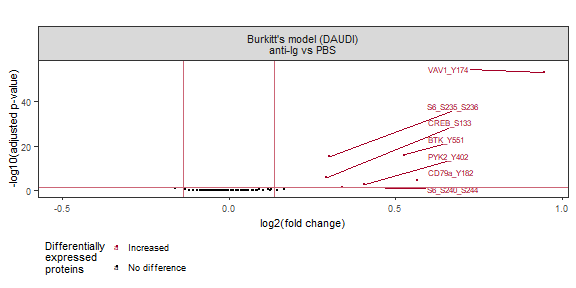
Differential expression analysis of activated (anti-Ig) vs basal signaling in HBL1
DESeq2 analysis parameters:
HBL1 cells: 2 stimuli
Compensated counts (>= 1)
Model design: stim_clean (ref: Basal)
# Select data
figS6B_data <- figS6_data_id %>%
dplyr::filter(cell_line == "HBL1" & counts >= 1)
# Differential expression analysis
# Prepare data to load into DESeq dataset
# cts: dataframe with proteins as row names, wells as column names, and count data as cell values
# coldata: dataframe with wells as row names and all metadata as columns
cts <- figS6B_data %>%
dplyr::select(target_nospace, plate_well, counts) %>%
dplyr::filter(!is.na(counts)) %>%
spread(plate_well, counts) %>%
replace(is.na(.), 0) %>%
column_to_rownames("target_nospace")
cts <- as.matrix(as.data.frame(cts))
coldata <- data.frame(plate_well = colnames(cts)) %>%
left_join(figS6B_data[, c(1:16)]) %>%
distinct()
rownames(coldata) <- coldata$plate_well
# Create DESeq object
# First define how the model is designed. Place most important parameter last
modeldesign <- ~ stim_clean
# Then create the DESeq dataset
dds <- DESeqDataSetFromMatrix(countData = cts,
colData = coldata,
design = modeldesign)
# Define the reference samples for design parameter
dds$stim_clean <- relevel(dds$stim_clean, ref = "Basal")
# Run DESeq2:
# This function performs a default analysis through the steps:
# Estimation of size factors: estimateSizeFactors
# Estimation of dispersion: estimateDispersions
# Negative Binomial GLM fitting and Wald statistics: nbinomWaldTest
dds <- DESeq(dds, test = "Wald", fitType = "local")
DESeq_comparisons <- resultsNames(dds) # lists the coefficients
# DESeq_comparisons
# Results
results_HBL1 <- results(dds, name = "stim_clean_Activated..H2O2._vs_Basal", alpha = 0.05)
# summary(results_HBL1, padj = 0.05)
list_results <- list(results_HBL1)
# Data transformation
# Regularized log transform
rld_HBL1 <- rlog(dds, blind = FALSE)
# Data wrangling
# Function to prepare DESeq2 results for volcano plots
# Standard log2FC filter = log2(1.5); standard padj filter = 0.05
prep_forvulcano <- function(dataset = dataset, padj_filter = 0.05, foldchange_filter = log2(1.5)){
dataset$proteins <- rownames(dataset)
dataset$target_nospace <- rownames(dataset)
# Add a column for differential expression
dataset$diff_express <- "NO"
dataset$diff_express[dataset$log2FoldChange > foldchange_filter & dataset$padj < padj_filter] <- "UP"
dataset$diff_express[dataset$log2FoldChange < -foldchange_filter & dataset$padj < padj_filter] <- "DOWN"
# Add a column for labeling
dataset$delabel <- NA
dataset$delabel[dataset$diff_express != "NO"] <- dataset$proteins[dataset$diff_express != "NO"]
# Add Ab metadata
# dataset <- left_join(as.data.frame(dataset), meta_Abs)
return(dataset)
}
# Apply function to each dataset
# Applied thresholds:
# padj < 0.05
# log2FC > log2(1.25)
names_volc <- c("volc_HBL1")
for(dataset in c(1:length(list_results))){
assign(names_volc[dataset], prep_forvulcano(dataset = list_results[[dataset]], foldchange_filter = log2(1.2)))
}# Select data
figS6B_data_volc <- volc_HBL1
figS6B_data_volc$wrapper <- "DLBCL model (HBL1)\nH2O2 vs PBS"
fig6B_stat <- as.data.frame(figS6B_data_volc) %>%
dplyr::filter(diff_express == "UP") %>%
dplyr::summarise(log2FC = mean(log2FoldChange)) %>%
pull(log2FC)
print("HBL1 mean log2FC")[1] "HBL1 mean log2FC"fig6B_stat[1] 0.888017print("2^(mean log2FC)")[1] "2^(mean log2FC)"(2^fig6B_stat)[1] 1.850631# Figure
figS6_panelB <- ggplot(data = figS6B_data_volc,
aes(x = log2FoldChange, y = -log10(padj), color = diff_express, label = delabel)) +
geom_point(size = 0.5) +
geom_text_repel(size = 1.75,
segment.size = 0.2,
hjust = 0,
direction = "y",
max.overlaps = 11,
nudge_y = -log10(0.005),
nudge_x = ifelse(figS6B_data_volc$log2FoldChange < 0, -1.05 - figS6B_data_volc$log2FoldChange, 1.55 - figS6B_data_volc$log2FoldChange)
) +
scale_color_manual(values = c(UP = "#A50026", NO = "black", DOWN = "#364B9A"),
breaks = c("UP", "NO", "DOWN"),
labels = c("Increased", "No difference", "Decreased"),
name = "Differentially\nexpressed\nproteins") +
geom_vline(xintercept = c(-log2(1.2), log2(1.2)), color = "#CC6677") +
geom_hline(yintercept = -log10(0.05), color = "#CC6677") +
facet_wrap(vars(factor(wrapper))) +
labs(x = "log2(fold change)", y = "-log10(adjusted p-value)", title = "") +
# coord_cartesian(xlim = c(-0.5, 1.5), ylim = c(0, 325)) +
theme_bw() +
textsize_small +
theme(legend.key.size = unit(0.2, "cm"), legend.spacing.y = unit(0.1, "cm"), legend.box.spacing = unit(0.1, "cm"), legend.position = "bottom", legend.justification = "left", panel.grid.minor = element_blank(), panel.grid.major = element_blank(), strip.text.x = element_text(size = 8)) +
guides(color = guide_legend(ncol = 1, byrow = TRUE))
figS6_panelB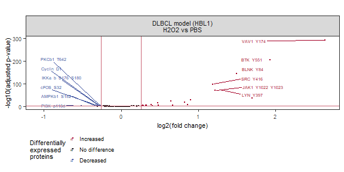
# Combine all panels of the figure
figS6 <- plot_grid(figS6_panelA, figS6_panelB, labels = PANEL_labels[c(1, 2)], nrow = 1, rel_widths = c(1, 1), label_size = 10, align = "h")
figS6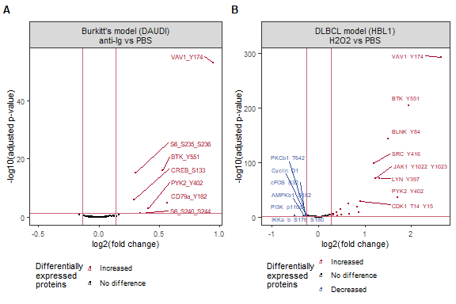
# Save figure as pdf, jpg, and png
ggsave(
figS6,
filename = "output/figures/suppl_figS6.pdf",
width = 6,
height = 4,
units = "in",
dpi = 300
)
ggsave(
figS6,
filename = "output/figures/suppl_figS6.jpg",
width = 6,
height = 4,
units = "in",
dpi = 300
)Figure S6: Volcano visualisation of activated signaling compared to basal signaling.
# Remove unnecessary files to clear up memory
rm(list = ls(pattern = "figS6"))
rm(list = ls(pattern = "png"))
rm(list = ls(pattern = "results_"))
rm(list = ls(pattern = "volc_"))
rm(list = ls(pattern = "list_"))
rm(list = ls(pattern = "names_"))
rm(list = ls(pattern = "titles_"))
rm(list = ls(pattern = "data_"))
rm(list = ls(pattern = "heat_"))
rm(list = ls(pattern = "rld"))
rm(list = ls(pattern = "pca"))
gc() used (Mb) gc trigger (Mb) max used (Mb)
Ncells 11101634 592.9 17081781 912.3 17081781 912.3
Vcells 19439632 148.4 57418403 438.1 89385421 682.0Figure S7: Additional example proteins for signaling activation in DAUDI and HBL1.
Input:
# ID-seq data DS091 (counts per well/sample and mean per condition)
figS7_data_id <- read_csv("output/DS091_ImmunostainingBio/IDseq_ann/bio_IDseq_data_sample.csv")
figS7_mean_id <- read_csv("output/DS091_ImmunostainingBio/IDseq_ann/bio_IDseq_data_condition.csv")figS7_cells <- c("DAUDI", "HBL1")
figS7_stim <- c("Basal", "Activated (anti-Ig)", "Activated (H2O2)")
figS7_stim_label <- c("Basal", "Activated\n(anti-Ig)", "Activated\n(H2O2)")
figS7_cell_stim <- c("DAUDI - Basal", "DAUDI - Activated (anti-Ig)", "HBL1 - Basal", "HBL1 - Activated (H2O2)")
figS7_cell_stim_label <- c("DAUDI basal", "DAUDI activated\n(anti-Ig)", "HBL1 basal", "HBL1 activated\n(H2O2)")# Select data
# figS7A_prot <- c("BTK_Y551", "CREB_S133", "PYK2_Y402", "S6_S240_S244", "VAV1_Y174")
figS7A_prot <- c("BLNK_Y84", "BTK_Y223", "LYN_Y397", "SHP2_Y580", "SYK_Y525_Y526")
figS7A_prot_label <- c("BLNK\n(Y84)", "BTK\n(Y223)", "LYN\n(Y397)", "SHP2\n(Y580)", "SYK\n(Y525/Y526)")
figS7A_data <- figS7_data_id %>%
dplyr::filter(cell_line == "DAUDI") %>%
subset(target_nospace %in% figS7A_prot)
figS7A_mean <- figS7_mean_id %>%
dplyr::filter(cell_line == "DAUDI") %>%
subset(target_nospace %in% figS7A_prot)
# Figure
figS7_panelA <- ggplot() +
geom_jitter(data = figS7A_data,
aes(x = factor(target_nospace, levels = figS7A_prot, labels = figS7A_prot_label),
y = counts_norm,
color = factor(stim_clean, levels = figS7_stim)),
alpha = 1, size = 1, width = 0.1) +
geom_errorbar(data = figS7A_mean,
aes(x = factor(target_nospace, levels = figS7A_prot, labels = figS7A_prot_label),
ymin = counts_norm, ymax = counts_norm,
group = factor(stim_clean, levels = figS7_stim),
color = factor(stim_clean, levels = figS7_stim)),
width = 0.35, size = 0.75) +
scale_color_manual(values = colors_stim, breaks = figS7_stim, labels = figS7_stim_label, name = "Treatment") +
labs(x = element_blank(), y = "Normalized counts") +
theme_bw() +
# RotatedAxis() +
theme(panel.grid.minor.y = element_blank(), panel.grid.major.x = element_blank(), legend.key.size = unit(0.5, "cm"), legend.spacing.y = unit(0.2, "cm"), legend.box.spacing = unit(0.01, "cm"), legend.position = "bottom", legend.justification = "left", axis.text.x = element_text(angle = 45, hjust = 0.5, vjust = 0.75)) +
textsize_small
figS7_panelA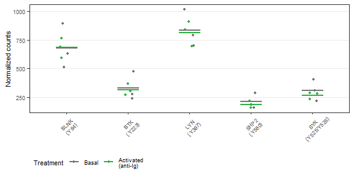
# Select data
figS7B_prot <- c("BTK_Y551", "CREB_S133", "PYK2_Y402", "S6_S240_S244", "VAV1_Y174")
figS7B_prot_label <- c("BTK\n(Y551)", "CREB\n(S133)", "PYK2\n(Y402)", "S6\n(S240/S244)", "VAV1\n(Y174)")
# figS7B_prot <- c("BLNK_Y84", "BTK_Y223", "LYN_Y397", "SHP2_Y580", "SYK_Y525_Y526")
figS7B_data <- figS7_data_id %>%
dplyr::filter(cell_line == "HBL1") %>%
subset(target_nospace %in% figS7B_prot)
figS7B_mean <- figS7_mean_id %>%
dplyr::filter(cell_line == "HBL1") %>%
subset(target_nospace %in% figS7B_prot)
# Figure
figS7_panelB <- ggplot() +
geom_jitter(data = figS7B_data,
aes(x = factor(target_nospace, levels =figS7B_prot, labels = figS7B_prot_label),
y = counts_norm,
color = factor(stim_clean, levels = figS7_stim)),
alpha = 1, size = 1, width = 0.1) +
geom_errorbar(data = figS7B_mean,
aes(x = factor(target_nospace, levels =figS7B_prot, labels = figS7B_prot_label),
ymin = counts_norm, ymax = counts_norm,
group = factor(stim_clean, levels = figS7_stim),
color = factor(stim_clean, levels = figS7_stim)),
width = 0.35, size = 0.75) +
scale_color_manual(values = colors_stim, breaks = figS7_stim, labels = figS7_stim_label, name = "Treatment") +
labs(x = element_blank(), y = "Normalized counts") +
theme_bw() +
RotatedAxis() +
theme(panel.grid.minor.y = element_blank(), panel.grid.major.x = element_blank(), legend.key.size = unit(0.5, "cm"), legend.spacing.y = unit(0.1, "cm"), legend.box.spacing = unit(0.01, "cm"), legend.position = "bottom", legend.justification = "left", axis.text.x = element_text(angle = 45, hjust = 0.5, vjust = 0.75)) +
# guides(color = guide_legend(ncol = 1, byrow = TRUE)) +
textsize_small
figS7_panelB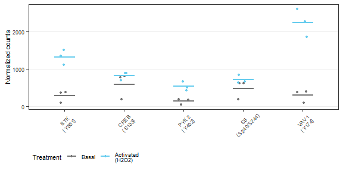
# Combine all panels of the figure
figS7 <- plot_grid(figS7_panelA, figS7_panelB, labels = PANEL_labels[c(1, 2)], nrow = 1, rel_widths = c(1, 1), label_size = 10, align = "h")
figS7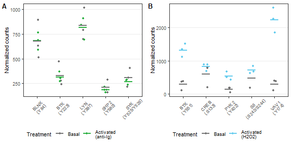
# Save figure as pdf, jpg, and png
ggsave(
figS7,
filename = "output/figures/suppl_figS7.pdf",
width = 6,
height = 3,
units = "in",
dpi = 300
)
ggsave(
figS7,
filename = "output/figures/suppl_figS7.jpg",
width = 6,
height = 3,
units = "in",
dpi = 300
)Figure S7: Additional example proteins for signaling activation in DAUDI and HBL1.
# Remove unnecessary files to clear up memory
rm(list = ls(pattern = "figS7"))
# rm(list = ls(pattern = "_fig1"))
rm(list = ls(pattern = "png_"))
gc() used (Mb) gc trigger (Mb) max used (Mb)
Ncells 11099872 592.8 17081781 912.3 17081781 912.3
Vcells 19436359 148.3 57418403 438.1 89385421 682.0Figure S8: Quality control of ID-seq data.
Input:
# Load sparse matrix format all data
figS8_counts_PlateA <- read_count_output("data/DS091_ImmunostainingBio/counts/PlateA/featurecounts", name = "featurecounts")
figS8_meta_wellID <- read_csv("data/DS091_ImmunostainingBio/config/DynSign.091_wellBC_metadata_seq.csv")
figS8_meta_Abs <- read_excel("data/DS091_ImmunostainingBio/config/BulkIDseq_Ab_info_seq_analysis_202212.xlsx")
figS8_comp_matrix <- read_csv("data/DS091_ImmunostainingBio/BC_compensation_matrix.csv")
# Reshape counts in data table format
figS8_counts_dtbl <- data.frame(figS8_counts_PlateA) %>%
mutate(barcode_name = rownames(figS8_counts_PlateA)) %>% #barcode_name #Barcodename
dplyr::select(barcode_name, everything()) %>%
gather("well_BC_seq", "counts", 2:c(ncol(figS8_counts_PlateA)+1)) %>%
dplyr::filter(counts >= 1) %>% # Remove undetected proteins counts
left_join(figS8_meta_Abs) %>%
unique() %>%
left_join(subset(figS8_meta_wellID, plate == "A")) %>% # Add sample metadata
dplyr::filter(!is.na(experiment)) %>%
arrange(plate, well) %>%
mutate(plate_well = paste0(plate, "_", well))figS8_conc <- c(0.5, 0.25, 0.125, 0.063, 0.031, 0)
figS8_conc_text <- c("0.5 ug/mL", "0.25 ug/mL", "0.125 ug/mL", "0.063 ug/mL", "0.031 ug/mL", "0 ug/mL")
figS8_conc_labels <- c("0.5\nug/mL", "0.25\nug/mL", "0.125\nug/mL", "0.063\nug/mL", "0.031\nug/mL", "0\nug/mL")# Select data
# Calculate per-sample properties
figS8A_data <- figS8_counts_dtbl %>%
unique()%>%
group_by(plate, well_BC_seq) %>%
summarize(nCount = sum(counts),
nProt = n()) %>%
left_join(figS8_meta_wellID)
# Figure
figS8_panelA <- ggplot(figS8A_data, aes(log10(nCount), nProt, color = staining_conc_text)) +
geom_point(alpha = 0.9, size = 1) +
facet_wrap(vars(factor(experiment, labels = "Before analysis\n(raw counts)"))) +
coord_cartesian(xlim = c(2.7, 6)) +
scale_color_manual(values = colors_stain_conc, name = "Staining conc.") +
labs(x = expression("Total counts (log"[10]*")"),
y = "Detected Ab barcodes") +
theme_bw() +
textsize_small +
theme(legend.position = "none", legend.key.size = unit(0.35, "cm"), legend.spacing.y = unit(0.01, "cm"), legend.box.spacing = unit(0.05, "cm"), panel.grid.minor = element_blank(), strip.text.x = element_text(size = 7.5), legend.title = element_text(size = 7))
figS8_panelA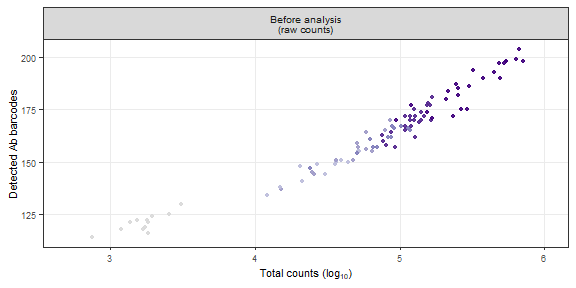
# Select data
figS8_data_comp <- figS8_counts_dtbl %>%
dplyr::select(plate, well, barcode_name, counts) %>%
left_join(figS8_comp_matrix, by = join_by(barcode_name == BC_to_correct)) #, multiple = "all"
# Get counts of OG BC
figS8_data_comp_OG <- figS8_data_comp %>%
dplyr::filter(barcode_name == OG_BC) %>%
dplyr::select(plate, well, OG_BC, counts) %>%
dplyr::rename(counts_OG_BC = counts)
# Calculate false reads
figS8_data_false <- left_join(figS8_data_comp, figS8_data_comp_OG) %>%
mutate(false_counts = (counts_OG_BC / percent_OG_BC) * percent_BC_to_correct) %>%
dplyr::filter(barcode_name != OG_BC) %>%
group_by(plate, well, barcode_name, counts) %>%
summarize(total_false_counts = sum(false_counts, na.rm = TRUE))
figS8B_counts_dtbl <- figS8_counts_dtbl %>%
left_join(figS8_data_false) %>%
mutate(total_false_counts = replace_na(total_false_counts, 0),
true_counts = as.integer(counts - total_false_counts),
percent_true = (true_counts / counts) * 100) %>%
dplyr::filter(!is.na(target_nospace)) # Remove barcodes not in Ab metadata (not conjugated/added in panel)
# Calculate per-sample properties
figS8B_data <- figS8B_counts_dtbl %>%
unique()%>%
group_by(plate, well_BC_seq) %>%
summarize(nCount = sum(true_counts),
nProt = n()) %>%
left_join(figS8_meta_wellID)
# Figure
figS8_panelB <- ggplot(figS8B_data, aes(log10(nCount), nProt, color = staining_conc_text)) +
geom_point(alpha = 0.9, size = 1) +
facet_wrap(vars(factor(experiment, labels = "After correction"))) +
coord_cartesian(xlim = c(2.7, 6)) +
scale_color_manual(values = colors_stain_conc, name = "Staining conc.") +
labs(x = expression("Total counts (log"[10]*")"),
y = "Detected Ab barcodes") +
theme_bw() +
textsize_small +
theme(legend.position = "none", legend.key.size = unit(0.35, "cm"), legend.spacing.y = unit(0.01, "cm"), legend.box.spacing = unit(0.05, "cm"), panel.grid.minor = element_blank(), strip.text.x = element_text(size = 7.5, margin = margin(0.3, 0, 0.3, 0, "cm")), legend.title = element_text(size = 7))
figS8_panelB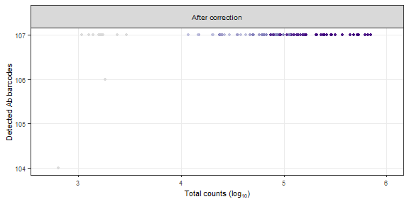
# Select data
figS8_scaling_factors <- figS8B_counts_dtbl %>%
dplyr::filter(cell_line %in% c("HBL1", "DAUDI")) %>%
ungroup() %>%
group_by(cell_line, target_nospace) %>%
mutate(true_scaling_factor_geo = true_counts / exp(mean(log((true_counts))))) %>%
ungroup() %>%
group_by(cell_line, description_sample, description_staining) %>%
summarize(true_scaling_factor_geo = median(true_scaling_factor_geo, na.rm = TRUE))
figS8C_counts_dtbl_norm <- figS8B_counts_dtbl %>%
dplyr::filter(cell_line %in% c("HBL1", "DAUDI")) %>%
left_join(figS8_scaling_factors) %>%
ungroup() %>%
mutate(true_counts_norm_geo = true_counts / true_scaling_factor_geo) %>%
dplyr::filter(!is.na(target_nospace))
# Calculate per-sample properties
figS8C_data <- figS8C_counts_dtbl_norm %>%
unique()%>%
group_by(well_BC_seq) %>%
summarize(nCount_norm = sum(true_counts_norm_geo),
nProt = n()) %>%
left_join(subset(figS8_meta_wellID, plate == "A"))
# Figure
figS8_panelC <- ggplot(figS8C_data, aes(log10(nCount_norm), nProt, color = factor(staining_conc, levels = figS8_conc, labels = figS8_conc_text))) +
geom_point(alpha = 0.9, size = 1) +
facet_wrap(vars(factor(experiment, labels = "After normalisation"))) +
coord_cartesian(xlim = c(2.7, 6)) +
scale_color_manual(values = colors_stain_conc, labels = figS8_conc, name = "Staining conc.\n(ug/mL)") +
labs(x = expression("Total counts (log"[10]*")"),
y = "Detected Ab barcodes") +
theme_bw() +
textsize_small +
theme(legend.position = "right", legend.key.size = unit(0.35, "cm"), legend.spacing.y = unit(0.01, "cm"), legend.box.spacing = unit(0.05, "cm"), panel.grid.minor = element_blank(), strip.text.x = element_text(size = 7.5, margin = margin(0.3, 0, 0.3, 0, "cm")), legend.title = element_text(size = 7), legend.text = element_text(size = 7.5))
figS8_panelC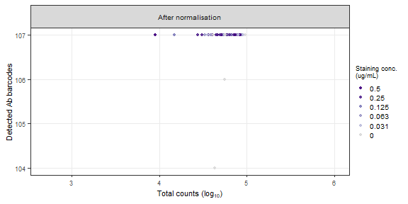
# Select data
rng <- range(log10(figS8A_data$nCount))
# Figure
figS8_panelD <- raw_map(data = log10(figS8A_data$nCount), well = figS8A_data$well, plate = 96, size = 7) +
scale_fill_viridis(expression("Total counts (log"[10]*")"), limits = c(rng[1], rng[2])) +
theme_bw() +
textsize_small
figS8_panelD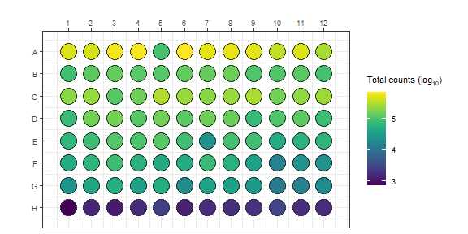
# Combine all panels of the figure
figS8_ABC <- plot_grid(figS8_panelA, figS8_panelB, figS8_panelC, labels = PANEL_labels[c(1, 2, 3)], nrow = 1, rel_widths = c(1, 1, 1.4), label_size = 10)
figS8 <- plot_grid(figS8_ABC, figS8_panelD, labels = c(NA, PANEL_labels[c(4)]), ncol = 1, rel_heights = c(1, 1.4), label_size = 10)
figS8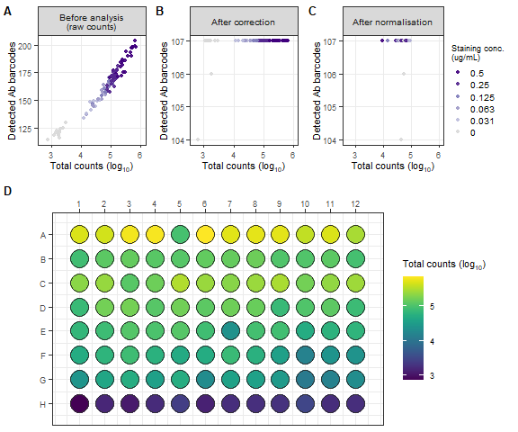
# Save figure as pdf, jpg, and png
ggsave(
figS8,
filename = "output/figures/suppl_figS8.pdf",
width = 6,
height = 4.8,
units = "in",
dpi = 300
)
ggsave(
figS8,
filename = "output/figures/suppl_figS8.jpg",
width = 6,
height = 4.8,
units = "in",
dpi = 300
)Figure S8: Quality control of ID-seq data.
# Remove unnecessary files to clear up memory
rm(list = ls(pattern = "figS8"))
rm(list = ls(pattern = "png_"))
gc() used (Mb) gc trigger (Mb) max used (Mb)
Ncells 11137907 594.9 17081781 912.3 17081781 912.3
Vcells 19521847 149.0 57418403 438.1 89385421 682.0Figure S9: Phospho flow cytometry gating strategy.
Input:
# Placeholder
figS9_panelA <- ggplot() +
geom_blank() +
scale_x_continuous(limits = c(0, 10)) +
scale_y_continuous(limits = c(0, 10)) +
# labs(title = "BCR signaling network") +
theme_bw() +
theme(axis.text = element_text(color = "white"),
axis.ticks = element_blank(),
panel.grid = element_blank()) +
textsize_small
# figS9_panelA
# PNG
png_figS9_panelA <- magick::image_read("output/figures/gating_figs/fig_debris_DS091.png") %>%
image_ggplot(interpolate = TRUE)
png_figS9_panelA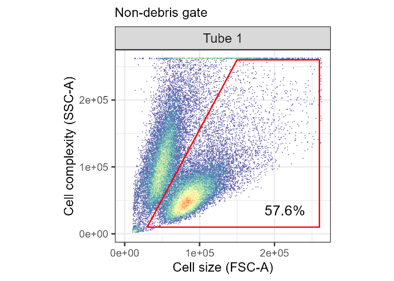
# Placeholder
figS9_panelB <- ggplot() +
geom_blank() +
scale_x_continuous(limits = c(0, 10)) +
scale_y_continuous(limits = c(0, 10)) +
# labs(title = "BCR signaling network") +
theme_bw() +
theme(axis.text = element_text(color = "white"),
axis.ticks = element_blank(),
panel.grid = element_blank()) +
textsize_small
# figS9_panelB
# PNG
png_figS9_panelB <- magick::image_read("output/figures/gating_figs/fig_singlets_DS091.png") %>%
image_ggplot(interpolate = TRUE)
png_figS9_panelB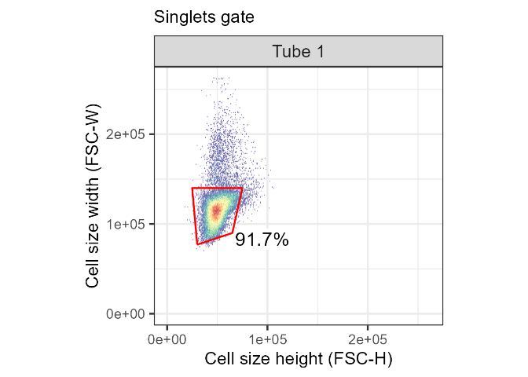
# Placeholder
figS9_panelC <- ggplot() +
geom_blank() +
scale_x_continuous(limits = c(0, 10)) +
scale_y_continuous(limits = c(0, 10)) +
# labs(title = "BCR signaling network") +
theme_bw() +
theme(axis.text = element_text(color = "white"),
axis.ticks = element_blank(),
panel.grid = element_blank()) +
textsize_small
# figS9_panelC
# PNG
png_figS9_panelC <- magick::image_read("output/figures/gating_figs/fig_live_DS091.png") %>%
image_ggplot(interpolate = TRUE)
png_figS9_panelC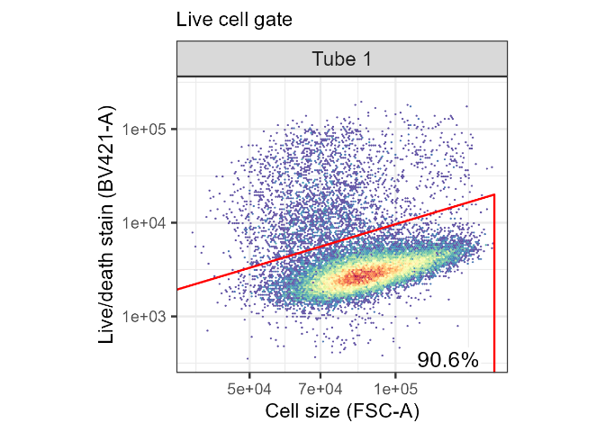
# Combine all panels of the figure
figS9 <- plot_grid(png_figS9_panelA, png_figS9_panelB, png_figS9_panelC, labels = PANEL_labels[c(1, 2, 3)], ncol = 3, rel_widths = c(1, 1, 1), label_size = 10)
figS9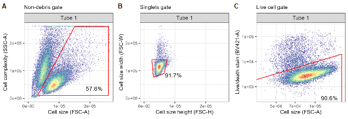
# Save figure as pdf, jpg, and png
ggsave(
figS9,
filename = "output/figures/suppl_figS9.pdf",
width = 6,
height = 2,
units = "in",
dpi = 300
)
ggsave(
figS9,
filename = "output/figures/suppl_figS9.jpg",
width = 6,
height = 2,
units = "in",
dpi = 300
)Figure S9: Phospho flow cytometry gating strategy.
# Remove unnecessary files to clear up memory
rm(list = ls(pattern = "figS9"))
rm(list = ls(pattern = "png_"))
gc() used (Mb) gc trigger (Mb) max used (Mb)
Ncells 11160719 596.1 17081781 912.3 17081781 912.3
Vcells 21985786 167.8 57418403 438.1 89385421 682.0Figure title.
Input: - BioRender schematic figures
… phosphoflow data
… ID-seq data
# Placeholder
figS0_panelA <- ggplot() +
geom_blank() +
scale_x_continuous(limits = c(0, 10)) +
scale_y_continuous(limits = c(0, 10)) +
# labs(title = "BCR signaling network") +
theme_bw() +
theme(axis.text = element_text(color = "white"),
axis.ticks = element_blank(),
panel.grid = element_blank()) +
textsize_small
# figS0_panelA
# PNG
png_figS0 <- image_read("output/figures/non_R_figs/xxx.png") %>%
image_ggplot()
# png_figS0# Select data
# Figure# Select data
# Figure# Combine all panels of the figure
figS0 <- plot_grid(panelA, panelB, labels = PANEL_labels[c(1, 2)], ncol = 1, rel_heights = c(1, 1), label_size = 10)
figS0
# Save figure as pdf, jpg, and png
# ggsave(
# figS0,
# filename = "output/figures/suppl_figS0.pdf",
# width = 6,
# height = 3,
# units = "in",
# dpi = 300
# )
ggsave(
figS0,
filename = "output/figures/suppl_figS0.jpg",
width = 6,
height = 3,
units = "in",
dpi = 300
)
# ggsave(
# figS0,
# filename = "output/figures/suppl_figS0.png",
# width = 6,
# height = 3,
# units = "in",
# dpi = 300
# )Figure title.
# Remove unnecessary files to clear up memory
rm(list = ls(pattern = "figS0"))
# rm(list = ls(pattern = "_fig1"))
rm(list = ls(pattern = "png_"))
gc()
sessionInfo()R version 4.4.1 (2024-06-14 ucrt)
Platform: x86_64-w64-mingw32/x64
Running under: Windows 10 x64 (build 19045)
Matrix products: default
locale:
[1] LC_COLLATE=English_Netherlands.utf8 LC_CTYPE=English_Netherlands.utf8
[3] LC_MONETARY=English_Netherlands.utf8 LC_NUMERIC=C
[5] LC_TIME=English_Netherlands.utf8
time zone: Europe/Amsterdam
tzcode source: internal
attached base packages:
[1] grid stats4 stats graphics grDevices utils datasets
[8] methods base
other attached packages:
[1] png_0.1-8 magick_2.8.3
[3] ggridges_0.5.6 forecast_8.23.0
[5] zoo_1.8-12 ggcyto_1.32.0
[7] flowWorkspace_4.16.0 ncdfFlow_2.50.0
[9] BH_1.84.0-0 flowCore_2.16.0
[11] ashr_2.2-63 apeglm_1.26.1
[13] MASS_7.3-60.2 ggbreak_0.1.2
[15] geomtextpath_0.1.4 ggh4x_0.2.8
[17] cowplot_1.1.3 patchwork_1.2.0
[19] greekLetters_1.0.2 ggpubr_0.6.0
[21] ggrepel_0.9.5 scales_1.3.0
[23] ggthemes_5.1.0 RColorBrewer_1.1-3
[25] scico_1.5.0 viridis_0.6.5
[27] viridisLite_0.4.2 mmtable2_0.1.3
[29] gt_0.10.1 ggvenn_0.1.10
[31] rgl_1.3.1 plotly_4.10.4
[33] ggcorrplot_0.1.4.1 corrplot_0.92
[35] umap_0.2.10.0 ggplotify_0.1.2
[37] dendsort_0.3.4 vsn_3.72.0
[39] ComplexHeatmap_2.20.0 platetools_0.1.7
[41] kableExtra_1.4.0 DESeq2_1.44.0
[43] SummarizedExperiment_1.34.0 Biobase_2.64.0
[45] MatrixGenerics_1.16.0 matrixStats_1.3.0
[47] GenomicRanges_1.56.1 GenomeInfoDb_1.40.1
[49] IRanges_2.38.0 S4Vectors_0.42.0
[51] BiocGenerics_0.50.0 Seurat_5.1.0
[53] SeuratObject_5.0.2 sp_2.1-4
[55] rstatix_0.7.2 factoextra_1.0.7
[57] FactoMineR_2.11 readxl_1.4.3
[59] Matrix_1.7-0 lubridate_1.9.3
[61] forcats_1.0.0 stringr_1.5.1
[63] dplyr_1.1.4 purrr_1.0.2
[65] readr_2.1.5 tidyr_1.3.1
[67] tibble_3.2.1 ggplot2_3.5.1
[69] tidyverse_2.0.0 workflowr_1.7.1
loaded via a namespace (and not attached):
[1] vroom_1.6.5 nnet_7.3-19 goftest_1.2-3
[4] DT_0.33 TH.data_1.1-2 vctrs_0.6.5
[7] spatstat.random_3.2-3 digest_0.6.36 shape_1.4.6.1
[10] git2r_0.33.0 mixsqp_0.3-54 deldir_2.0-4
[13] parallelly_1.37.1 SQUAREM_2021.1 reshape2_1.4.4
[16] httpuv_1.6.15 foreach_1.5.2 withr_3.0.0
[19] xfun_0.45 ggfun_0.1.5 survival_3.6-4
[22] memoise_2.0.1 hexbin_1.28.3 RProtoBufLib_2.16.0
[25] emmeans_1.10.2 systemfonts_1.1.0 ragg_1.3.2
[28] GlobalOptions_0.1.2 quantmod_0.4.26 pbapply_1.7-2
[31] promises_1.3.0 scatterplot3d_0.3-44 httr_1.4.7
[34] globals_0.16.3 fitdistrplus_1.1-11 ps_1.7.6
[37] rstudioapi_0.16.0 UCSC.utils_1.0.0 miniUI_0.1.1.1
[40] generics_0.1.3 base64enc_0.1-3 processx_3.8.4
[43] curl_5.2.1 zlibbioc_1.50.0 polyclip_1.10-6
[46] quadprog_1.5-8 GenomeInfoDbData_1.2.12 SparseArray_1.4.8
[49] xtable_1.8-4 doParallel_1.0.17 evaluate_0.24.0
[52] S4Arrays_1.4.1 preprocessCore_1.66.0 fracdiff_1.5-3
[55] hms_1.1.3 irlba_2.3.5.1 colorspace_2.1-0
[58] urca_1.3-4 ROCR_1.0-11 reticulate_1.38.0
[61] spatstat.data_3.1-2 Rgraphviz_2.48.0 magrittr_2.0.3
[64] lmtest_0.9-40 later_1.3.2 lattice_0.22-6
[67] spatstat.geom_3.2-9 future.apply_1.11.2 getPass_0.2-4
[70] XML_3.99-0.17 scattermore_1.2 xts_0.14.0
[73] RcppAnnoy_0.0.22 pillar_1.9.0 nlme_3.1-164
[76] iterators_1.0.14 compiler_4.4.1 RSpectra_0.16-1
[79] stringi_1.8.4 tensor_1.5 plyr_1.8.9
[82] crayon_1.5.3 abind_1.4-5 truncnorm_1.0-9
[85] gridGraphics_0.5-1 emdbook_1.3.13 locfit_1.5-9.10
[88] bit_4.0.5 sandwich_3.1-0 whisker_0.4.1
[91] codetools_0.2-20 multcomp_1.4-25 textshaping_0.4.0
[94] TTR_0.24.4 openssl_2.2.0 bslib_0.7.0
[97] GetoptLong_1.0.5 mime_0.12 splines_4.4.1
[100] circlize_0.4.16 Rcpp_1.0.12 fastDummies_1.7.3
[103] tseries_0.10-56 cellranger_1.1.0 Rttf2pt1_1.3.12
[106] leaps_3.2 knitr_1.47 utf8_1.2.4
[109] clue_0.3-65 fs_1.6.4 listenv_0.9.1
[112] ggsignif_0.6.4 estimability_1.5.1 callr_3.7.6
[115] statmod_1.5.0 tzdb_0.4.0 svglite_2.1.3
[118] pkgconfig_2.0.3 tools_4.4.1 cachem_1.1.0
[121] numDeriv_2016.8-1.1 fastmap_1.2.0 rmarkdown_2.27
[124] ica_1.0-3 broom_1.0.6 sass_0.4.9
[127] coda_0.19-4.1 BiocManager_1.30.23 dotCall64_1.1-1
[130] graph_1.82.0 carData_3.0-5 RANN_2.6.1
[133] farver_2.1.2 yaml_2.3.8 cli_3.6.3
[136] leiden_0.4.3.1 lifecycle_1.0.4 askpass_1.2.0
[139] uwot_0.2.2 mvtnorm_1.2-5 backports_1.5.0
[142] cytolib_2.16.0 BiocParallel_1.38.0 timechange_0.3.0
[145] gtable_0.3.5 rjson_0.2.21 progressr_0.14.0
[148] parallel_4.4.1 limma_3.60.3 jsonlite_1.8.8
[151] RcppHNSW_0.6.0 bit64_4.0.5 multcompView_0.1-10
[154] assertthat_0.2.1 Rtsne_0.17 yulab.utils_0.1.4
[157] spatstat.utils_3.0-5 bdsmatrix_1.3-7 highr_0.11
[160] jquerylib_0.1.4 timeDate_4032.109 lazyeval_0.2.2
[163] shiny_1.8.1.1 htmltools_0.5.8.1 affy_1.82.0
[166] sctransform_0.4.1 glue_1.7.0 spam_2.10-0
[169] XVector_0.44.0 rprojroot_2.0.4 gridExtra_2.3
[172] flashClust_1.01-2 invgamma_1.1 igraph_2.0.3
[175] extrafontdb_1.0 R6_2.5.1 labeling_0.4.3
[178] bbmle_1.0.25.1 cluster_2.1.6 aplot_0.2.3
[181] DelayedArray_0.30.1 tidyselect_1.2.1 xml2_1.3.6
[184] car_3.1-2 future_1.33.2 munsell_0.5.1
[187] KernSmooth_2.23-24 affyio_1.74.0 data.table_1.15.4
[190] htmlwidgets_1.6.4 rlang_1.1.4 spatstat.sparse_3.1-0
[193] extrafont_0.19 spatstat.explore_3.2-7 fansi_1.0.6